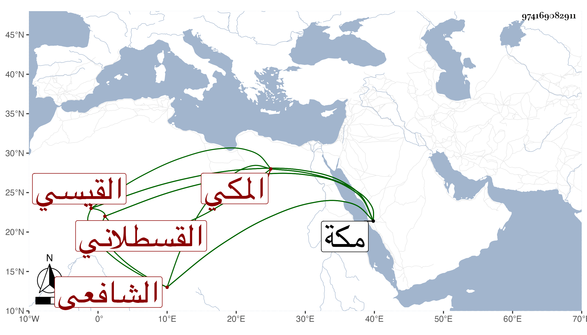

0902Sakhawi.DawLamic.ITO20230111-ara1.EIS1600.974169082911
Biography ID: 974169082911
13
عبد الله بن أحمد بن حسن بن الزين محمد بن الأمين محمد بن القطب محمد بن أبي العباس أحمد بن علي العفيف القيسي القسطلاني الأصل المكي الشافعي ويعرف بابن الزين . ولد سنة سبعين وسبعمائة أو قبلها بقليل بمكة ونشأ فسمع على الكمال بن حبيب والنشاوروي والجمال الأميوطي في آخرين ، وأجاز له الصلاح ابن أبي عمر وابن أميلة وغيرهما . وحدث روى عنه ابن فهد وحفظ الحاوى أو أكثره ولازم درس الجمال بن ظهيرة سنين ثم ترك . وتعاني الشهادة والوثائق والسجلات وناب في القضاء بمرسوم الدولة المظفرية أحمد بن المؤيد ولكن لم يظهر ذلك إلا قبل موته بجمعة ، وكان يذاكر بمسائل من الفقه مع معرفة بالوثائق والسجلات والدعاوى بحيث صار مقصودا فيها . مات في ربيع الآخر سنة سبع وعشرين بمكة ودفن بمقبرة أصحابه القسطلانيين من المعلاة رحمه الله .
